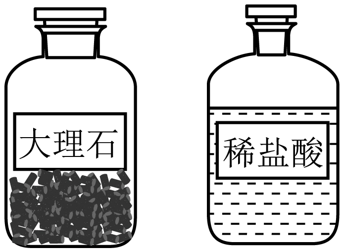
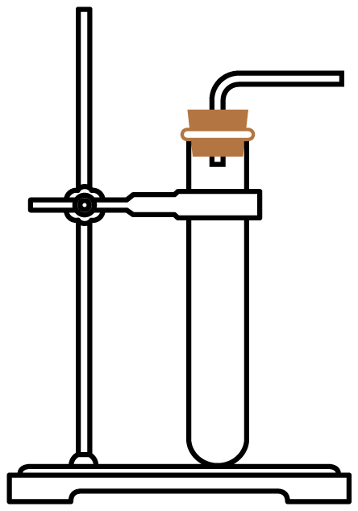
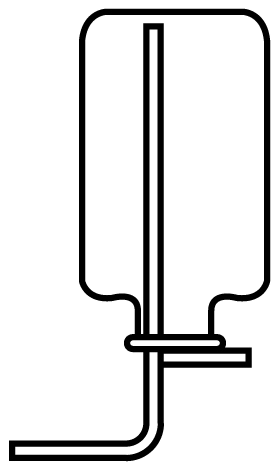
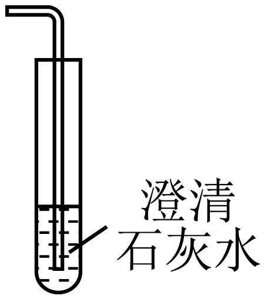

2023年北京中考化学 第18题 解析
18. 下列关于 的实验室制取及检验的说法不正确的是
的实验室制取及检验的说法不正确的是
 |  |  |  |
A．制的药品 | B．发生装置 | C．收集方法 | D．检验 |
A. AB. BC. CD. D
【答案】C
【解析】
【详解】A、实验室常用大理石和稀盐酸反应制取二氧化碳，故A正确；
B、实验室常用大理石和稀盐酸反应制取二氧化碳，该反应为固液常温型，可选该装置作为发生装置，故B正确；
C、二氧化碳的密度比空气大，可用向上排空气法收集，故C错误；
D、二氧化碳能使澄清石灰水变浑浊，通常使用澄清石灰水检验二氧化碳，故D正确；
故选：C。
中国传统节日习俗积淀着博大精深的历史文化内涵。回答19~21题。